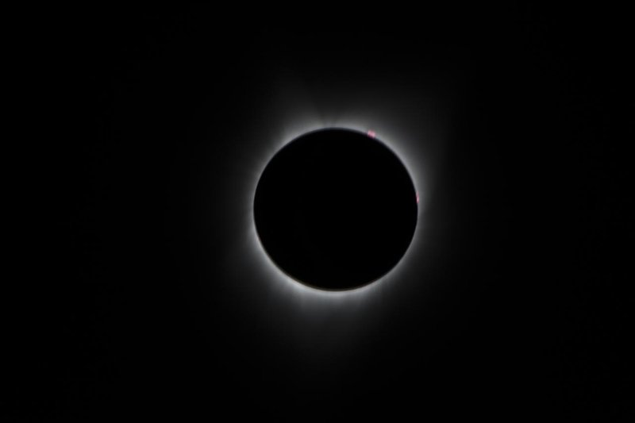

La pagina 3.2 si è chiusa con la longitudine eclittica della Luna nota entro circa 40′ a ogni Luna nuova e piena. Una Luna nuova alla longitudine eclittica del Sole non è però ancora un’eclissi: la Luna deve anche passare abbastanza vicino all’eclittica da coprire il Sole, e una Luna piena deve passarle abbastanza vicino da entrare nell’ombra della Terra.
Con la latitudine eclittica della Luna e le grandezze del Sole, della Luna e dell’ombra della Terra, il Sole dell’Atto II e la Luna della pagina 3.1 dicono quali Lune nuove e piene sono eclissi. Costruito così, il modello di questa pagina trova ogni eclissi dei dieci anni dal 2021 al 2030, e ne dà l’istante entro circa un’ora e mezza. Il modello di Tolomeo, portato avanti di diciannove secoli, le trova ancora tutte tranne una.
1 · OsservazioneLe eclissi e la latitudine eclittica della Luna
Per vedere quali Lune nuove e piene diventano eclissi, e con quale frequenza, le prendiamo tutte negli ultimi dieci anni del cielo di riferimento, dal 2016 al 2025. Delle 247, 35 sono eclissi, 22 di Sole e 13 di Luna. Contiamo un’eclissi di Luna solo quando una parte della Luna entra nell’ombra vera e propria della Terra, dove il Sole è del tutto nascosto; la Luna passa anche, più spesso, nella penombra che la circonda, dove si oscura appena.
Nella figura
- oro
- un’eclissi di Sole
- rosso
- un’eclissi di Luna
- pieno
- un’eclissi totale o anulare
- vuoto
- un’eclissi parziale
- punti grigi
- le Lune nuove e piene senza eclissi
Le eclissi sono quelle del cielo di riferimento, trovate con i criteri della sezione 2 a ciascuna delle sue Lune nuove e piene. Concordano con l’elenco della NASA degli stessi dieci anni: le stesse 35 eclissi, ciascuna dello stesso tipo (l’eclissi ibrida del 20 aprile 2023, totale lungo la maggior parte del suo percorso, contata come totale), con la sua metà entro due minuti da quella della NASA.
Ogni anno ha almeno due eclissi di Sole, e il 2018 ne ha tre, tutte parziali. Le eclissi di Luna sono meno numerose, e il 2016 e il 2020 non ne hanno. Le eclissi arrivano a gruppi, le stagioni delle eclissi, di una a tre eclissi ciascuna, distanti in media circa 174 giorni. Due stagioni richiedono 348 giorni, 18 giorni meno di un anno, quindi ogni stagione cade circa 18 giorni prima nell’anno rispetto alla stagione di un anno prima.

Ciò che decide quali Lune nuove e piene sono eclissi è la latitudine eclittica della Luna. La Luna non si muove lungo l’eclittica, come il Sole, ma su un percorso inclinato rispetto a essa, che la porta circa 5° a nord dell’eclittica e 5° a sud ogni mese: da 4,98° a 5,30° al massimo, nel 2016–2025. Due volte al mese attraversa l’eclittica, ai nodi. Questi non sono fissi: si spostano verso ovest lungo l’eclittica, e fanno un giro in 18,61 anni.
Il cielo dell’agosto 2026 dai Gemelli alla Vergine, guardando a sud, con il nord in alto e l’est a sinistra, sulla griglia equatoriale.
Il percorso della Luna dall’11 al 15 agosto, con una tacca all’inizio di ogni giorno. Attraversa l’eclittica vicino a Regolo, 16 ore dopo essere passata davanti al Sole alla Luna nuova del 12 agosto. Così vicina al nodo, la Luna nuova coprì il Sole: l’eclissi totale di quel giorno.
Nella figura
- ☉
- il Sole alla Luna nuova del 12 agosto
- ☋
- il nodo, dove la Luna attraversa l’eclittica andando verso sud
Tolomeo riferisce che «gli [astronomi] ancora più antichi», confrontando eclissi di Luna, trovarono che esse si ripetono dopo 6585⅓ giorni, in cui ci sono «circa 223 lunazioni, 239 ritorni in anomalia, 242 ritorni in latitudine» (Almagest IV 2). Una lunazione è un mese sinodico. Questo periodo era ben noto nell’astronomia babilonese, e oggi si chiama saros. L’Esercizio 2 lo trova dai tre mesi.
2 · ModelloIl cerchio inclinato della Luna
La latitudine eclittica
Tolomeo porta la Luna, con il suo epiciclo, su un cerchio inclinato sull’eclittica di 5° (V 12), i cui nodi si spostano verso ovest. Per la sola longitudine eclittica trascura l’inclinazione, perché «una così piccola inclinazione non ha alcun effetto apprezzabile sulla posizione in longitudine» (IV 6).
Per trovare le coordinate eclittiche della Luna usiamo gli stessi metodi dell’Atto I. Sia $\Omega$ la longitudine eclittica del nodo ascendente (☊ nelle figure), dove la Luna attraversa l’eclittica andando verso nord, opposto al nodo discendente ☋, e $F$ l’argomento della latitudine, l’angolo della Luna lungo il suo cerchio da quel nodo. Per trovare la direzione della Luna partiamo dal sistema del suo cerchio, dove sta in $(\cos F, \sin F, 0)$, incliniamo il cerchio dell’inclinazione $i$ attorno alla linea dei nodi, e ruotiamo la linea dei nodi fino a $\Omega$, come nella pagina 1.2:
$$\mathbf{m} = R_z(\Omega)\, R_x(i) \begin{pmatrix} \cos F \\ \sin F \\ 0 \end{pmatrix} = \begin{pmatrix} \cos\Omega\cos F - \sin\Omega\cos i\sin F \\ \sin\Omega\cos F + \cos\Omega\cos i\sin F \\ \sin i\sin F \end{pmatrix}.$$La terza componente è il seno della latitudine eclittica. Per la longitudine eclittica è più semplice contare dal nodo: ruotato indietro di $\Omega$, il vettore è $R_z(-\Omega)\,\mathbf{m} = (\cos F,\ \cos i\sin F,\ \sin i\sin F)$, le cui prime due componenti danno $\lambda - \Omega$, nello stesso quadrante di $F$:
Per un’inclinazione piccola $\beta \approx i \sin F$, entro 9″ per $i = 5^\circ$.
La seconda formula dice che la longitudine eclittica della Luna contata dal nodo, $\lambda - \Omega$, non è esattamente il suo angolo $F$ lungo il proprio cerchio: un arco del cerchio inclinato, proiettato sull’eclittica, risulta un po’ più corto o più lungo. Scritta come differenza, diventa
$$\lambda - \Omega = F - \operatorname{atan2}(e\sin 2F,\ 1 + e\cos 2F) \approx F - e\sin 2F, \qquad e = \tan^2\frac{i}{2}.$$La derivazione della differenza
Prendiamo la tangente di $\lambda - \Omega - F$, con $\tan(\lambda - \Omega) = \cos i\tan F$, e moltiplichiamo numeratore e denominatore per $\cos^2 F$:
$$\tan(\lambda - \Omega - F) = \frac{\cos i\tan F - \tan F}{1 + \cos i\tan^2 F} = \frac{(\cos i - 1)\sin F\cos F}{\cos^2 F + \cos i\sin^2 F}.$$Con $\sin F\cos F = \tfrac12\sin 2F$, $\cos^2 F = \tfrac12(1 + \cos 2F)$ e $\sin^2 F = \tfrac12(1 - \cos 2F)$, e dividendo numeratore e denominatore per $\tfrac12(1 + \cos i)$, si ottiene
$$\tan(\lambda - \Omega - F) = -\frac{e\sin 2F}{1 + e\cos 2F}, \qquad e = \frac{1 - \cos i}{1 + \cos i} = \tan^2\frac{i}{2}.$$Il denominatore è positivo, quindi l’angolo è quello della formula qui sopra, e al primo ordine in $e$ vale $-e\sin 2F$.
La differenza ha la forma dell’equazione del centro della pagina 2.1, con $\tan^2(i/2)$ al posto dell’eccentricità e $2F$ al posto dell’anomalia. Il valore massimo di $(\lambda - \Omega) - F$ è $\arcsin\tan^2(i/2)$ = 6,55′, raggiunto in $F = 45^\circ$.
Lungo il suo cerchio la Luna si muove come in longitudine eclittica nella pagina 3.1: un moto medio uniforme, corretto dall’equazione dell’anomalia. Il suo argomento della latitudine medio è $\bar F = \bar\lambda - \Omega$, e il suo argomento della latitudine vero è $F = \bar F + q$, con lo stesso $q$ della longitudine eclittica. Tolomeo lo calcola allo stesso modo (IV 9).
L’argomento della latitudine medio cresce di $n_F$ al giorno: il moto medio della Luna $n$, più il moto del nodo, che si sposta verso ovest, verso la Luna, di 0,053° al giorno. La Luna torna quindi allo stesso nodo un po’ prima che alla stessa longitudine eclittica: dopo 27,21 giorni, il mese draconitico della pagina 3.1, invece di 27,32.
Il modello di questa pagina calcola la longitudine eclittica della Luna come nella pagina 3.1, $\lambda = \bar\lambda + q$, come se la Luna si muovesse lungo l’eclittica stessa. Togliendo $\Omega$ si ha $\lambda - \Omega = \bar F + q = F$: il modello prende la distanza angolare della Luna dal nodo misurata lungo l’eclittica uguale alla sua distanza angolare misurata lungo il proprio cerchio. È la differenza ricavata qui sopra, che il modello trascura, come fa Tolomeo.
La longitudine eclittica del modello sbaglia quindi fino a 6,55′, poco accanto all’errore proprio dell’epiciclo di 40′ alla Luna nuova e piena. La differenza si annulla ai nodi, quindi è ancora più piccola dove avvengono le eclissi: entro circa 18° da un nodo, resta sotto i 4′.
Nella figura
- viola
- il cerchio della Luna, con l’inclinazione disegnata tre volte più grande
- oro
- l’eclittica
- arco oro spesso
- $\lambda - \Omega$, la longitudine eclittica della Luna contata da ☊
- disco scuro
- l’ombra della Terra, opposta al Sole, disegnata più grande di quanto sia
A una Luna nuova la Luna ha la longitudine eclittica del Sole, quindi il modello dà il suo argomento della latitudine come $F = \lambda_\odot - \Omega$, la distanza angolare del Sole dal nodo ascendente. A una Luna piena la Luna è opposta al Sole, alla longitudine eclittica $\lambda_\odot + 180^\circ$. Lì c’è anche il centro dell’ombra della Terra, che punta dalla parte opposta al Sole, quindi $F = \lambda_\odot + 180^\circ - \Omega$, la distanza angolare del centro dell’ombra dal nodo ascendente.
Che una Luna nuova o piena sia un’eclissi dipende quindi soprattutto da dove si trova il Sole rispetto alla linea dei nodi, come alla Luna nuova del 12 agosto 2026 da cui parte la Figura 3, un’eclissi totale con il Sole e la Luna insieme vicino a ☋. Le grandezze della sezione successiva fanno il resto.
Il Sole si allontana da un nodo di $n_\odot + (n_F - n) = 1{,}0386^\circ$ al giorno, il suo moto proprio più il moto del nodo verso di lui. Torna allo stesso nodo dopo l’anno delle eclissi,
$$Y_\text{e} = \frac{360^\circ}{n_\odot + n_F - n} = 346{,}620 \text{ giorni}.$$L’anno delle eclissi segue anche da due dei mesi della Luna. In un mese draconitico $P_d$ la Luna fa un giro contato dal nodo, quindi si allontana dal nodo di $n_F = 360^\circ / P_d$ al giorno. In un mese sinodico $P_s$ fa un giro contato dal Sole, quindi si allontana dal Sole di $n - n_\odot = 360^\circ / P_s$ al giorno.
L’angolo dal nodo al Sole è l’angolo dal nodo alla Luna meno l’angolo dal Sole alla Luna, quindi cresce con la differenza delle due velocità, $n_F - (n - n_\odot)$, che è il moto del Sole dal nodo qui sopra. Dividendo per 360°,
$$\frac{1}{Y_\text{e}} = \frac{1}{P_d} - \frac{1}{P_s},$$e con $P_d = 27{,}21222$ e $P_s = 29{,}53059$ giorni questo dà gli stessi 346,62 giorni. Mezzo anno delle eclissi, 173,31 giorni, è l’intervallo fra le stagioni delle eclissi della sezione 1.
L’ombra e la parallasse
Quanto vicino a un nodo debba essere il Sole dipende dalle grandezze in gioco, viste dal centro della Terra: i raggi apparenti $s$ della Luna e $s_\odot$ del Sole, e le parallassi orizzontali $\pi$ della Luna e $\pi_\odot$ del Sole, gli angoli sotto cui si vede il raggio della Terra da ciascuno. Alla sua distanza media la Luna ha $s = 15{,}5'$ e $\pi = 57{,}0'$; il Sole ha $s_\odot = 16{,}0'$ e $\pi_\odot = 8{,}8''$.
(a) l’ombra della Terra alla distanza della Luna
(b) l’ombra della Luna sulla Terra
Nella figura
- grigio scuro
- l’ombra
- grigio chiaro
- (b) la penombra
- tratteggio
- (b) il piano per O, perpendicolare alla direzione del Sole
- $\beta$
- (b) alla Luna nuova, l’angolo della Luna dal Sole visto da O
Visto dal centro della Terra O, il raggio della Terra posto alla distanza della Luna sottende l’angolo $\pi$, e il cono si restringe di $s_\odot - \pi_\odot$ su quella distanza, quindi il raggio dell’ombra è $u = \pi - (s_\odot - \pi_\odot)$, al primo ordine in questi piccoli angoli.
La derivazione del raggio dell’ombra
Siano $R$ e $R_\odot$ i raggi della Terra e del Sole, e $d$ e $d_\odot$ le distanze della Luna e del Sole da O. La parallasse orizzontale della Luna $\pi$ è l’angolo nella Luna M sotto cui si vede il raggio della Terra. La retta da M che sfiora la Terra la tocca in T, dove è perpendicolare al raggio OT, quindi l’angolo retto del triangolo OTM è in T, sulla superficie della Terra:
Lo stesso triangolo con il Sole al posto della Luna dà $\sin\pi_\odot = R / d_\odot$, e il triangolo con l’angolo retto sulla superficie del Sole, visto da O, dà $\sin s_\odot = R_\odot / d_\odot$. Trattando ciascuno di questi piccoli angoli come uguale al suo seno, $s_\odot = R_\odot / d_\odot$, $\pi_\odot = R / d_\odot$ e $\pi = R / d$.
Il raggio della Figura 4a parte dal bordo del Sole, a $R_\odot$ dall’asse, e sfiora il bordo della Terra dallo stesso lato, a $R$ dall’asse, a una distanza $d_\odot$ più avanti. Si avvicina quindi all’asse di $R_\odot - R$ su $d_\odot$, e forma con l’asse l’angolo
$$\frac{R_\odot - R}{d_\odot} = s_\odot - \pi_\odot,$$l’angolo alla punta dell’ombra. Dietro la Terra il raggio mantiene questo angolo, quindi alla distanza della Luna è a $R - (s_\odot - \pi_\odot)\,d$ dall’asse. Quello è lì il raggio dell’ombra, e visto da O sottende
$$u = \frac{R - (s_\odot - \pi_\odot)\,d}{d} = \frac{R}{d} - (s_\odot - \pi_\odot) = \pi - (s_\odot - \pi_\odot).$$L’atmosfera della Terra rende l’ombra un poco più grande. Le tavole delle eclissi della NASA usano la regola di Danjon, aggiungendo l’1% a $\pi$, e così facciamo noi:
Alle distanze medie $u = 41{,}7'$, 2,69 volte il raggio della Luna. A una Luna piena il centro della Luna è a $|\beta|$ dal centro dell’ombra, quindi c’è un’eclissi di Luna quando i due dischi si sovrappongono, $|\beta| < u + s$, e un’eclissi totale quando la Luna è tutta dentro, $|\beta| < u - s$. La frazione del diametro della Luna dentro l’ombra è la magnitudine dell’eclissi.
Un’eclissi di Sole si vede solo dove l’ombra della Luna cade sulla Terra. Vista dal Sole, la Terra è un disco, e l’ombra della Luna lo attraversa come due cerchi attorno a un asse: la penombra, dove la Luna nasconde una parte del Sole, e al suo interno l’ombra, molto più piccola, dove lo nasconde tutto (vista di lato nella Figura 4b, e sul disco della Terra, visto dal Sole, nella Figura 5a).
La parallasse ne dà il posto e la grandezza. Prendiamo un osservatore $\gamma$ raggi terrestri a nord del centro della Terra, misurati perpendicolarmente alla linea di vista ($\gamma$ è negativo a sud). Visto da lì, la Luna è spostata a sud di $\gamma\pi$ e il Sole di $\gamma\pi_\odot$, quindi la Luna si avvicina al Sole di $\gamma(\pi - \pi_\odot)$, e la distanza angolare fra i loro centri è
$$\left|\beta - \gamma(\pi - \pi_\odot)\right|.$$È zero, e l’osservatore vede il centro della Luna sul centro del Sole, stando sull’asse dell’ombra, in
$$\gamma = \frac{\beta}{\pi - \pi_\odot}.$$Ogni raggio terrestre di distanza dall’asse aggiunge $\pi - \pi_\odot$ alla distanza fra i centri. I due dischi si sovrappongono, e l’osservatore vede un’eclissi parziale, finché quella distanza è minore della somma dei loro raggi, $s + s_\odot$: fino a $(s + s_\odot)/(\pi - \pi_\odot)$ raggi terrestri dall’asse. Quello è il raggio della penombra, lo stesso in ogni direzione trasversale alla linea di vista, quindi la penombra è un cerchio attorno all’asse.
Il disco della Terra va da $\gamma = -1$ a $\gamma = 1$. Se l’asse cade al suo interno, $|\beta| < \pi - \pi_\odot$, l’eclissi è centrale. Altrimenti l’osservatore più vicino all’asse è sul bordo della Terra, $\gamma = \pm 1$, dove il Sole e la Luna sono sull’orizzonte e la distanza fra i loro centri è $|\beta| - (\pi - \pi_\odot)$. Quindi la Luna copre una parte del Sole da qualche luogo della Terra quando quella distanza è minore di $s + s_\odot$:
Un’eclissi centrale è totale se la Luna, vista da dove l’asse incontra la Terra, è più grande del Sole, e anulare se un anello di Sole resta visibile attorno a essa.
I limiti delle eclissi
Un limite su $|\beta|$ diventa un limite sulla distanza angolare del Sole da un nodo attraverso $\sin\beta = \sin i \sin F$. Le grandezze cambiano con la distanza della Luna, da 356·400 a 406·700 km, e così i limiti: un’eclissi di Luna richiede il Sole entro 10,3°–12,2° da un nodo, e una di Sole entro 16,4°–18,3°. La distanza propria del Sole cambia i limiti di mezzo primo d’arco.
(a) Luna nuova: l’ombra della Luna sulla Terra
(b) Luna piena: la Luna nell’ombra della Terra
(c) la latitudine eclittica della Luna vicino al nodo, e i limiti delle eclissi
Nella figura
- disco grigio, punto
- (a) la penombra e l’ombra; l’ombra è disegnata più grande di quanto sia, come un anello dove l’eclissi è anulare
- viola, tratteggio
- il percorso della Luna; in (a), visto dal Sole, il percorso della sua ombra
- linea oro
- l’eclittica
- riquadro oro, rosso
- (c) i limiti delle eclissi di Sole e di Luna
Tolomeo calcola gli stessi limiti (VI 5). Per la Luna alla sua distanza minima il suo limite lunare è 12°12′ (12,20°), dove la Luna più vicina di questa pagina dà 12,2°. I suoi limiti solari sono asimmetrici, 17°41′ con la Luna a nord dell’eclittica e solo 8°22′ con essa a sud, perché prende la parallasse degli osservatori della sua parte del mondo.
Le stagioni delle eclissi
A 1,0386° al giorno il Sole impiega fra 31,5 e 35,3 giorni ad attraversare i limiti solari attorno a un nodo, più di un mese sinodico, 29,53 giorni. Almeno una Luna nuova cade durante l’attraversamento, quindi ogni passaggio del Sole per un nodo porta un’eclissi di Sole, e ogni anno almeno due. Quando una Luna nuova cade vicino all’inizio del passaggio, la successiva può cadere vicino alla fine, e la stagione ha due eclissi di Sole, entrambe parziali, come a giugno e luglio 2029.
I limiti lunari richiedono solo da 19,7 a 23,4 giorni per essere attraversati, meno di un mese, quindi una Luna piena può mancarli. Per esempio entrambe le stagioni del 2027 non hanno eclissi di Luna.
Tolomeo ragiona allo stesso modo sugli intervalli fra le eclissi (VI 6). In sei mesi l’argomento della latitudine della Luna cresce di 184°, un po’ più di mezzo giro, quindi un’eclissi a un nodo può essere seguita da un’eclissi all’altro sei mesi dopo.
Nella figura
- oro
- Lune nuove, e la fascia dei limiti solari
- rosso
- Lune piene, e la fascia dei limiti lunari
- grandi
- un’eclissi: pieno, totale o anulare; vuoto, parziale
- più chiaro
- di quanto si allargano i limiti quando la Luna è più vicina
3 · AdattamentoI parametri del cerchio inclinato
Le eclissi avvengono solo alla Luna nuova e piena, dove la manovella della pagina 3.2 sposta la Luna al massimo di qualche primo d’arco, quindi possiamo mantenere le longitudini eclittiche già adattate alla Luna nella pagina 3.1 e al Sole nella pagina 2.3. Il cerchio inclinato aggiunge tre parametri: il moto in latitudine $n_F$, l’inclinazione $i$, e l’argomento della latitudine in un istante, che colloca i nodi.
Il moto in latitudine
Una velocità si fissa meglio con due osservazioni distanti, perché l’errore di ciascuna viene diviso per il tempo fra esse, una volta che una velocità approssimata ha dato il numero di giri interi in mezzo. Le eclissi sono osservazioni di questo tipo: ciascuna dà, attraverso la sua magnitudine, la distanza della Luna da un nodo in un istante registrato. Un anno è decisamente troppo corto per questo, quindi prendiamo $n_F$ dalla Luna di riferimento (Meeus 47), come la pagina 3.1 ha preso i suoi moti medi.
L’inclinazione e il nodo
L’inclinazione e la posizione dei nodi vengono dalle latitudini eclittiche stesse: le latitudini vicino ai nodi, $F = 0^\circ$ o $180^\circ$, fissano i nodi, e quelle massime, in $F = \pm 90^\circ$, fissano l’inclinazione. Le Lune nuove e piene di un anno cadono a ogni distanza dai nodi, quindi fissano entrambi, e sono gli istanti in cui avvengono le eclissi.
Adattiamo quindi $i$ e l’argomento della latitudine a J2000.0 ai minimi quadrati alla latitudine eclittica della Luna di riferimento nelle ultime 25 Lune nuove e piene documentate, dal 5 novembre 2025 al 26 ottobre 2026. Il moto in latitudine $n_F$ viene dallo stesso tipo di adattamento sulle 2473 Lune nuove e piene dal 1926 al 2025, che lo fissa entro 0,02° per secolo. L’adattamento dà $i = 5{,}00^\circ$, e pone il nodo ascendente alla longitudine eclittica 125,05° a J2000.0, dove il nodo medio di Meeus è a 125,04°.
Le latitudini eclittiche massime della Luna, che variano da un mese all’altro (sezione 1), suggerirebbero un’inclinazione maggiore. Con 5,145°, la loro media, le latitudini eclittiche a queste Lune nuove e piene sbaglierebbero fino a 10′, quindi ciò di cui hanno bisogno le eclissi è l’inclinazione che vale alla Luna nuova e piena.
Le grandezze
Per verificare il modello da solo, i suoi limiti delle eclissi dovrebbero venire dal suo Sole e dalla sua Luna. Prendiamo quindi i raggi moderni della Terra, della Luna e del Sole, e le distanze proprie del modello, anche se variano più di quelle reali (pagina 3.2). La distanza della Luna è quella dell’epiciclo, su un deferente alla distanza media della Luna di riferimento di 385·000 km. Quella del Sole è quella dell’eccentrico, il cui raggio è 1 au.
StoriaI parametri di Tolomeo
Tolomeo misurò l’inclinazione direttamente (V 12), da quanto vicino allo zenit di Alessandria passava la Luna quando era più a nord dell’eclittica, vicino al solstizio d’estate. La rifrazione e la parallasse, che spostano la Luna soprattutto vicino all’orizzonte, quasi si annullano allo zenit, quindi l’osservazione non richiede quasi correzioni. Trovò 5°, l’inclinazione che dà il nostro adattamento.
Per il moto in latitudine si affidò a un periodo di origine babilonese usato da Ipparco, un numero intero di mesi sinodici che contiene anche un numero intero di ritorni della Luna allo stesso nodo (IV 2, ed Esercizio 2). Il periodo copre secoli, e su un intervallo così lungo la velocità risulta molto vicina a quella della Luna di riferimento.
4 · VerificaIl modello contro le eclissi del 2021–2030
La latitudine eclittica
Per vedere la latitudine eclittica fra le Lune nuove e piene oltre che in esse, la giudichiamo come abbiamo giudicato la longitudine eclittica, con una curva dell’errore, ora di $\Delta\beta = \beta_\text{modello} - \beta_\text{rif}$.
Alle 25 Lune nuove e piene a cui è stata adattata, la latitudine eclittica è entro 1,7′ da quella della Luna di riferimento, e alle altre Lune nuove e piene del 2021–2030, che l’adattamento non ha usato, entro 2,6′. Fra esse l’errore arriva a 26′, ma lì non avviene alcuna eclissi.
Le eclissi
Lasciamo che il modello trovi le proprie Lune nuove e piene, dal suo Sole e dalla sua Luna, e decida a ciascuna se c’è un’eclissi e di che tipo. Escono tutte le 38 eclissi del 2021–2030, e nessun’altra. Tutte tranne una sono del tipo giusto: la profonda eclissi parziale di Sole del 29 marzo 2025 risulta totale.
Le Lune nuove e piene del modello cadono tipicamente a tre quarti d’ora dalla metà dell’eclissi reale, e nel caso peggiore a circa un’ora e mezza. Quasi tutto questo è l’errore dell’epiciclo in longitudine eclittica, fino a 43′ a queste eclissi, che la Luna impiega ben più di un’ora a percorrere rispetto al Sole, e di più vicino al suo apogeo, dove si muove più lentamente. L’errore del Sole aggiunge solo pochi minuti, e la metà di un’eclissi non deve cadere esattamente alla Luna nuova o piena.
La tabella segue una per una le quattro eclissi del 2026. Le magnitudini delle due eclissi di Luna verificano insieme la latitudine eclittica e la grandezza dell’ombra. I loro istanti verificano poco, perché la pagina 3.1 ha adattato il suo epiciclo a tre eclissi, fra cui queste due.
| Eclissi del 2026 | metà (TT) | il modello | magnitudine |
|---|---|---|---|
| 17 febbraio, anulare di Sole | 12:14 | anulare, 35 min prima | |
| 3 marzo, totale di Luna | 11:36 | totale, 4 min dopo | 1,15 (modello 1,15) |
| 12 agosto, totale di Sole | 17:47 | totale, 19 min prima | |
| 28 agosto, parziale di Luna | 04:14 | parziale, 7 min dopo | 0,93 (modello 0,91) |
StoriaIl modello di Tolomeo contro le sue eclissi
Le eclissi che Tolomeo osservò lui stesso sono le tre di Alessandria a cui adattò il suo epiciclo (IV 6), quindi i suoi tempi lì verificano più la sua aritmetica che il suo modello. Le sue latitudini eclittiche, fissate da altre osservazioni, sono una verifica, e concordano con quelle della Luna di riferimento entro pochi primi d’arco.
I suoi tempi sono entro mezz’ora da quelli reali, anche se il suo Sole e la sua Luna restano entrambi molto indietro rispetto al Sole e alla Luna reali. Collocava la sua Luna, a ogni eclissi, opposta al proprio Sole, quindi essa condivide l’errore di quel Sole, e i due errori si annullano nell’istante dell’eclissi.
Portato avanti di diciannove secoli, il suo modello trova ancora tutte tranne una delle 38 eclissi del 2021–2030, parecchie di tipo diverso, e ne aggiunge alcune che non avvennero: il suo moto in latitudine, dal periodo babilonese, era quasi esatto. I suoi tempi, però, sbagliano di ore, perché il suo Sole e la sua Luna si allontanano fra loro.
5 · ResiduoGli istanti, i quarti e il luogo
Un’eclissi la cui metà è prevista sbagliata di un’ora e mezza è sempre la stessa eclissi, ma un’eclissi di Luna può allora essere prevista per un momento in cui la Luna è sotto l’orizzonte dell’osservatore. Questi errori vengono dalla longitudine eclittica della Luna alla Luna nuova e piena, che la pagina 3.2 ha ricondotto per lo più all’anomalia dell’epiciclo, adattata a sole tre eclissi e leggermente sfasata.
Le oscillazioni della Figura 7 fra le Lune nuove e piene hanno due cause. L’argomento della latitudine del modello porta l’errore dell’epiciclo in longitudine eclittica lontano dalle Lune nuove e piene, l’evezione che corregge la manovella della pagina 3.2, e si vede di più vicino ai nodi, dove la latitudine cambia più in fretta con $F$. Anche l’inclinazione cambia con la fase della Luna. Alla Luna nuova e piena la Luna segue un cerchio inclinato di 5,0°, ai quarti uno inclinato di circa 5,3°, come richiede il termine della Luna di riferimento $0{,}17^\circ \sin(2D - F)$. Come l’evezione, è un effetto dell’attrazione del Sole, ed è per questo che l’adattamento alle Lune nuove e piene dà meno della media delle latitudini eclittiche massime.
Il modello dice anche solo che un’eclissi di Sole si vede da qualche parte sulla Terra. Se si veda da una data città, e quanta parte del Sole vi sia coperta, dipende dalla parallasse in quel luogo, che sposta la Luna nuova apparente da quella vera. Tolomeo (VI 10) e Copernico (De Revolutionibus IV 30) calcolano l’eclissi per un osservatore, la parte più difficile del problema.
Il Sole e la Luna si muovono ciascuno secondo le proprie leggi. I pianeti sono legati al Sole più strettamente: ciascuno torna indietro, con un moto retrogrado, una volta a ogni ritorno nella stessa posizione rispetto al Sole, l’argomento della pagina 4.1.
Esercizi
Alla Luna nuova del modello del 12 agosto 2026, alle 17:28 TT, l’argomento della latitudine della Luna è $F = 169{,}7^\circ$; il modello pone la Luna a 367·195 km e il Sole a 1,027 au. Con $i = 5{,}00^\circ$, trova la latitudine eclittica della Luna. Si vede un’eclissi di Sole da qualche parte sulla Terra? È centrale, e se sì totale o anulare? Fai lo stesso per la Luna nuova successiva, l’11 settembre, dove $F = 199{,}7^\circ$ e il limite solare è 89,0′. Verifica la prima nella Figura 5, con il Sole a +10,3°: la stessa distanza angolare da un nodo, con la Luna a nord dell’eclittica come il 12 agosto.
$s = \arcsin(1737{,}4/d)$ e $\pi = \arcsin(6378{,}14/d)$ per la Luna a $d$ km; per il Sole $s_\odot$ è 959,63″ e $\pi_\odot$ 8,794″ a 1 au, inversamente proporzionali alla sua distanza. L’asse dell’ombra passa a $\gamma = |\beta|/(\pi - \pi_\odot)$ raggi terrestri dal centro della Terra.
$\beta \approx 5{,}00^\circ \times \sin 169{,}7^\circ = 0{,}894^\circ = 53{,}6'$, a nord dell’eclittica, 10,3° prima del nodo discendente.
A 367·195 km la Luna ha $s = 16{,}3'$ e $\pi = 59{,}7'$; a 1,027 au il Sole ha $s_\odot = 15{,}6'$ e $\pi_\odot = 8{,}6''$. Il limite solare è $\pi - \pi_\odot + s + s_\odot = 91{,}4'$, più di 53,6′, quindi l’eclissi si vede da qualche parte; anche il limite centrale $\pi - \pi_\odot = 59{,}6'$ è più di 53,6′, quindi è centrale, con $\gamma = 0{,}899$. L’asse incontra la Terra a $367195 - 6378\sqrt{1 - 0{,}899^2} \approx 364400$ km dalla Luna, che vista da lì ha un raggio di 16,4′, più dei 15,6′ del Sole: l’eclissi è totale. L’eccentrico mette il Sole troppo lontano ad agosto (il Sole reale era a 1,013 au, pagina 3.2); con la distanza reale il raggio del Sole è 15,8′, e l’eclissi è ancora totale.
Lo fu: la NASA pone la sua fase massima alle 17:47 TT, 19 minuti dopo la Luna nuova del modello. L’11 settembre, 19,7° dopo il nodo, $\beta = -101{,}0'$, oltre il limite di 89,0′, e non c’è eclissi.
Un’eclissi si ripete quando un numero intero di mesi sinodici, che riporta la fase, è anche un numero intero di mesi draconitici, che riporta il posto della Luna rispetto al nodo. Da $P_s = 29{,}530586$ giorni e $P_d = 27{,}212221$ giorni, trova i periodi più brevi di questo tipo con la frazione continua di $P_s/P_d$. Mostra che 223 mesi sinodici sono anche quasi esattamente un numero intero di mesi anomalistici ($P_a = 27{,}554562$ giorni) e di anni delle eclissi, e di’ che cosa fa ciascun accordo all’eclissi ripetuta. Perché gli astronomi antichi triplicarono il periodo? Quanto dura una serie di eclissi ripetute? La relazione di Ipparco di 5458 mesi sinodici per 5923 ritorni in latitudine (IV 2) non è fra le ridotte: come è costruita a partire da esse?
$P_s/P_d = 1{,}0851958$. Per la serie, trova di quanto cambia $F$ in un periodo, e confronta con il limite solare alle distanze medie, 17,2°.
$P_s/P_d = 1{,}0851958 = [1; 11, 1, 2, 1, 4, 3, \dots]$, le cui ridotte sono 12/11, 13/12, 38/35, 51/47, 242/223, 777/716. La frazione $p/q$ significa $q$ mesi sinodici contro $p$ mesi draconitici: 47 mesi sinodici, 1387,94 giorni, mancano 51 mesi draconitici di 2,7 ore, mentre 223 mesi sinodici, 6585,321 giorni, mancano 242 mesi draconitici solo di 0,88 ore.
Gli stessi 6585,321 giorni contengono 238,992 mesi anomalistici, 5,3 ore meno di 239, quindi la Luna torna alla stessa distanza e l’eclissi ha quasi la stessa grandezza e lo stesso tipo. Contengono 18,999 anni delle eclissi, quindi il Sole torna vicino allo stesso nodo, e l’eclissi cade nella stessa stagione, 18 anni e circa 11 giorni dopo. Lo 0,321 di giorno significa che la Terra ha ruotato di 115° in più, quindi l’eclissi si vede un terzo del giro della Terra più a ovest. Tre periodi, 19755,96 giorni, sono quasi un numero intero di giorni. Gli astronomi antichi triplicarono il Periodico «per ottenere un periodo con un numero intero di giorni», l’Exeligmos di 19756 giorni (IV 2), dopo il quale un’eclissi torna anche quasi alla stessa longitudine geografica.
In un periodo $F$ cambia di $-0{,}485^\circ$, quindi il posto del Sole all’eclissi attraversa lentamente i limiti. Una serie dura circa $2 \times 17{,}2 / 0{,}485 = 71$ periodi, circa 1300 anni: le eclissi totali del 1º agosto 2008, del 12 agosto 2026 e del 23 agosto 2044 appartengono a una stessa serie, e la sua eclissi del 3 settembre 2062 è solo parziale.
I 5458 mesi di Ipparco sono $7 \times 716 + 2 \times 223$, e i suoi 5923 ritorni $7 \times 777 + 2 \times 242$: una combinazione delle ultime due ridotte, che manca di circa un’ora, come il Periodico. Quale dei due sia più vicino dipende da frazioni di secondo nei mesi, più fini di quanto un secolo di Lune nuove possa misurare.
Nel cielo di riferimento la fase massima dell’eclissi del 20/21 ottobre 134 cadde alle 23:17 TT del 20 ottobre. Trova il suo tempo vero locale ad Alessandria, 29,92° a est di Greenwich, per una Terra che ruota uniformemente, con UT = TT. L’equazione del tempo era +13,4 min. Tolomeo calcolò la metà dell’eclissi un’ora prima di mezzanotte (IV 6): quale valore di $\Delta T = \text{TT} - \text{UT}$ dà il suo tempo? Confrontalo con i 9263 s del cielo di riferimento.
Il tempo medio locale è l’UT più la longitudine geografica a 4 minuti per grado; il tempo vero è il tempo medio più l’equazione del tempo. Percorri gli stessi passi a ritroso dalle 23:00 di Tolomeo.
Con UT = TT, le 23:17 più 119,7 minuti di longitudine geografica fanno l’01:17 di tempo medio locale, e con l’equazione del tempo l’01:30 di tempo vero, un’ora e mezza dopo mezzanotte: due ore e mezza più tardi di quando la vide Tolomeo.
A ritroso dalle 23:00 di tempo vero di Tolomeo, il tempo medio locale è 22:47 e l’UT 20:47, quindi $\Delta T = 23\text{:}17 - 20\text{:}47 = 2{,}50$ ore. Il $\Delta T$ del cielo di riferimento per quell’anno è 9263 s, 2,57 ore, 4 minuti in più: entro l’incertezza di una misura di tempo antica. Dal 134 d.C. la rotazione della Terra è rimasta indietro di due ore e mezza rispetto a un orologio uniforme, e registri come questo sono il modo in cui lo si misura.
Fonti
- Tolomeo, Almagest (trad. ingl. G. J. Toomer, 1984): IV 2 (il Periodico di 223 mesi e l’Exeligmos, i 5458 mesi e i 5923 ritorni in latitudine di Ipparco, con le note di Toomer sul nome saros e sull’origine babilonese); IV 6 (l’inclinazione trascurata nella longitudine eclittica; le eclissi del 133–136); IV 9 (l’argomento della latitudine e il moto in latitudine); V 12 (l’inclinazione di 5°); VI 5 (i limiti delle eclissi); VI 6 (gli intervalli fra le eclissi); VI 10 (le eclissi di Sole per un osservatore).
- Copernico, De Revolutionibus (trad. ingl. E. Rosen), IV 30 (quali Lune nuove e piene sono eclissi, e la Luna nuova apparente per un osservatore).
- R. Fitzpatrick, A Modern Almagest, § 6.3 (la latitudine eclittica, $\sin\beta = \sin i \sin F$) e § 7.4–7.6 (i criteri per le eclissi e la loro frequenza).
- J. Meeus, Astronomical Algorithms (2ª ed., 1998), cap. 47 (la Luna di riferimento: la serie della sua latitudine eclittica, $F$ e il nodo medio) e cap. 49 (le Lune nuove e piene medie).
- F. Espenak, NASA Goddard Space Flight Center, le tavole decennali delle eclissi di Sole e di Luna, 2021–2030 (eclipse.gsfc.nasa.gov, consultate il 30 ottobre 2026), e F. Espenak e J. Meeus, Five Millennium Canon of Lunar Eclipses (NASA, 2009), per la regola di Danjon; il $\Delta T$ del cielo di riferimento è quello di Espenak e Meeus (NASA, 2006), e dal 2005 quello misurato dello US Naval Observatory.
- Ogni numero di questa pagina:
tools/numbers/3.3-eclipses.js.